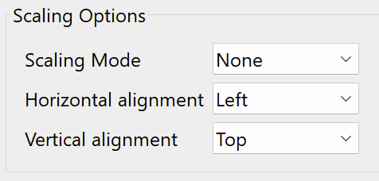

Vorbereitung: Übersicht / Preparation: Overview
Die Vorbereitung eines computerbasierten Assessments auf der Grundlage von CBA ItemBuilder-Inhalten beginnt mit der Verwendung des IRTlib-Editors zur Erstellung einer Studienkonfiguration. Dies umfasst in der Regel die folgenden Schritte:
- Voraussetzung: Überprüfen Sie die Verfügbarkeit der Runtime. Der IRTlib Editor kann zur Vorbereitung von Assessments mit im CBA ItemBuilder erstellten Inhalten verwendet werden. Für die Verwendung von CBA ItemBuilder Tasks, die in Projektdateien gespeichert sind, ist eine Runtime (d.h. die Dateien
main.*.jsundmain.*.css) in der Version erforderlich, die genau der Version des CBA ItemBuilders entspricht, der zur Erstellung der Items verwendet wurde (z.B.9.9.0). Bevor Sie den IRTLib-Editor verwenden, vergewissern Sie sich, dass die erforderliche Runtime enthalten ist, oder importieren Sie die Runtime-Dateien (siehe Abschnitt Einstellungen für Details).
Hinweis: Für die Verwendung von CBA ItemBuilder-Items ab Version 9.9 ist dieser Schritt in der Regel nicht notwendig.
- Erstellen einer neuen Studie: Der IRTlib-Editor wird verwendet, um sogenannte Studien zu konfigurieren. Die Versionen von Studien können im Editor nachverfolgt werden, Studien können dort veröffentlicht (d.h. für die Datenerfassung versiegelt) werden. Um mit dem IRTlib-Editor mit der Erstellung von Inhalten zu beginnen, muss zuerst eine Studie erstellt werden (siehe Abschnitt Studien für Details).
Beachten Sie, dass mindestens eine Studie im IRTlib Editor definiert sein muss, bevor eine Studienkonfiguration zur Datenerfassung mit einem IRTlib Player verwendet werden kann.
Basiskonfigurationen für Studie festlegen (Info): Zu den Basiskonfigurationen, die sich auf den Inhalt einer vorbereiteten Studie beziehen, gehören die Studienbezeichnung und -beschreibung, der Anmeldemodus, die Anzeigekonfiguration, das Menü für die Testadministratoren und die Angabe, wie nach Abschluss aller in einer Studie definierten Inhalte fortgefahren werden soll (siehe Abschnitt Studien für weitere Einzelheiten).
Erstellen eines neuen Erhebungsteils: Jede Studie besteht aus einem oder mehreren Erhebungsteilen. Erhebungsteile werden als Bausteine von Assessments betrachtet, die zusammen verwaltet werden, wie z.B. Items aus einer bestimmte Domäne. Erhebungsteile vom Typ CBA ItemBuilder können verwendet werden, um CBA ItemBuilder-Aufgaben in einer linearen Sequenz oder mit Blockly-basiertem Routing zu administrieren.
Beachten Sie, dass jede Studie mindestens einen im IRTlib Editor definierten Erhebungsteil benötigt, bevor eine Studienkonfiguration zur Datenerhebung mit einem IRTlib Player verwendet werden kann.
Grundeinstellungen für Erhebungsteil konfigurieren (Info): Ein Erhebungsteil vom Typ CBA ItemBuilder basiert auf einer Menge von CBA ItemBuilder-Tasks. Jede CBA ItemBuilder-Projektdatei benötigt mindestens einen Task, es werden aber auch Projekte mit mehreren Tasks unterstützt. Wenn CBA ItemBuilder-Inhalte mit einem gemeinsamen Zeitlimit über Tasks hinweg administriert werden sollen, erlauben Erhebungsteile die Zuordnung von Aufgaben zu einer Struktur, die Assessmentinhalte unterscheidet, welche vor einem zeitlich begrenzten Abschnitt administriert werden (z.B. Instruktionen, im Abschnitt Vorspann-Items), Inhalte die nach einem zeitlich begrenzten Abschnitt administriert werden (z.B. Danksagung, im Abschnitt Nachspann-Items) und dazwischen liegende Aufgaben mit begrenzter Zeit (Items, siehe Abschnitt Erhebungsteile).
Items Hinzufügen: Um die Definition eines Erhebungsteils abzuschließen, müssen die CBA ItemBuilder-Projektdateien in den Abschnitt Items importiert werden. Standardmäßig wird davon ausgegangen, dass die Reihenfolge der CBA ItemBuilder-Tasks linear ist. Wenn jedoch das Routing für einen Studienteil aktiviert ist, kann das Blockly-basierte Ablaufdefinition verwendet werden, um verschiedene Testdesigns zu implementieren (z. B. mehrere Hefte, mehrstufige Tests usw.).
Eingebettete Programhilfe
Für die Verwendung des IRTlib Editors ist eine Programmhilfe direkt in die Anwendung integriert, welche über das kleine ?-Symbol oben rechts eingeblendet werden kann.
Die Inhalte dieser Hilfe-Seiten aus dem IRTlib Editor sind in diese IRTlib Dokumentation integriert und werden immer in diesem Rahmen mit der überschrift Eingebettete Programmhilfe dargestellt.
Vorbereitung von CBA ItemBuilder-Inhalten
Die IRTlib Software wird benötigt, um die mit dem CBA ItemBuilder erstellten Assessmentinhalte anzuzeigen und für Datenerhebungen zu verwenden. Dafür müssen die Projektdateien (ZIP-Archive), die mit dem CBA ItemBuilder erstellt werden können, vorliegen.
Einsprungpunkt (Task)
Jede CBA ItemBuilder-Projektdatei muss mindestens einen Task definieren. Nur Tasks können in der IRTlib Software verwendet werden. Dass ein Task vollständig definiert ist, lässt sich in der Preview des CBA ItemBuilder leicht überprüfen:
Assessmentinhalte können mit der IRTlib Software aus einzelnen Task zusammgengesetzt werden. Die Reihenfolge von Tasks kann statisch als lineare Sequenz oder als programmierter Ablauf in Blockly definiert werden. Aus der IRTlib Software heraus können keine einzelnen Seiten innerhalb von CBA ItemBuilder-Tasks angesteuert werden.
CBA ItemBuilder-Projektdateien welche nur über die Option Project oder Page in der Preview angezeigt werden können, lassen sich in der IRTlib Software nicht verwenden.
Verhalten der Anzeige (Scaling Options)
Mit Hilfe der Preview des CBA ItemBuilder kann auch geprüft werden, ob die Assessmentinhalte in der gewünschten Skalierung, die unter Scaling Options eingestellt werden kann, den Erfordernissen entsprechend angezeigt werden.

Einstellungen analog zur Preview können in dem IRTlib Editor für die Anzeigeeinstellungen einer Studie definiert werden (siehe Abschnitt Studien).
Definition des Scorings (Ergebnisdaten)
Die IRTlib Software ist dafür gedacht, Daten mit Hilfe von CBA ItemBuilder-Task zu erheben. Was aus der Bearbeitung eines Tasks an Ergebnisvariablen gespeichert wird, können Itemautoren in der Scoring-Definition eines Tasks definieren.
Aus der Bearbeitung von Tasks werden die als Classes definierten Ergebnisvariablen gespeichert, deren Werte entweder einzelne Hits sein können, oder die Übernahme von Informationen mit Hilfe des sogenannten ResultText-Operators im CBA ItemBuilder.
Mit Hilfe des eingebauten Scoring Debug Window sollte das Scoring einzelner CBA ItemBuider-Tasks bereits im CBA ItemBuilder geprüft werden, bevor die Assessmentinhalte mit Hilfe der IRTlib Software zu Studien mit einem oder mehreren Erhebungsteilen kombiniert werden. Weitere Hinweise zu vorgeschlagenen Prüfungen sind im Abschnitt Auslieferungen Testen und Freigeben formuliert.
Ohne weitere Konfiguration werden Log-Daten in den mit dem CBA ItemBuilder erstellten Assessmentinhalten automatisch erfasst und über die IRTlib Software gesammelt.
Integrierte Multimedia-Inhalte (Ressourcen)
Die mit dem CBA ItemBuilder erstellten Assessmentinhalte können Multimedia-Inhalte (Bilder, Videos, Audiodateien) enthalten. Bilder und Videos werden dabei in einer Größe angezeigt, die in der entsprechenden Komponente des CBA ItemBuilder im Page Editor verwendet wird. In den Projektdateien werden Bilder, Videos und Audiodateien als Ressourcen gespeichert, sobald diese über den Ressource Browser eingefügt wurden. Nicht verwendete Ressourcen bleiben dabei in den Projektdateien enthalten.
Die Dateigröße von CBA ItemBuilder-Projekdateien ist für die Verwendung insbesondere in Online-Auslieferungen relevant und sollte so klein wie möglich gehalten werden.
Vor der Verwendung von CBA ItemBuilder-Projektdateien wird empfohlen, folgende Punkte zu berücksichtigen:
Bilder und Videos nur in der benötigten Größe: Bilder und Videos können ohne Qualitätsverlust auf die Größe (Breite/Width udn Höhe/Height) reduziert werden, in welcher sie in CBA ItemBuilder-Projekten auch wirklich verwendet werden.
Bilder wenn möglich komprimieren: Ohne die Bildgröße zu verändern können Bilder häufig in der Dateigröße weiter reduziert werden.
Videos wenn möglich komprimieren: Ohne die Video zu verändern können Videos häufig in der Dateigröße weiter reduziert werden.
Audios nicht in höchster Qualität: Wenn nicht notwendig, sollten Audio-Dateien in ihrer Qualität soweit reduziert werden, dass sie noch akzeptabel klingen, aber bzgl. der Übertragungszeiten optimiert sind.
Entfernen nicht verwendeter Ressourcen: Der CBA ItemBuilder stellt eine Schaltfläche im Resource Browser zur verfügung, um nicht verwendeten Ressourcen automatisch zu entfernen. Diese Funktion sollte abschließend genutzt werden, damit die Projekt-Dateien keine unnötigen Ressourcen enthalten.
Ein sorgsamer Umgang mit Ressourcen und eine Optimierung der Dateigröße von CBA ItemBuilder-Projektdateien kann entscheidend für ein flüssiges und reibungsfreies Assessment sein, was sich mit der IRTlib Software online ausliefern und bspw. über Mobilgeräte mit beschränkter Internetbandbreite nutze lässt.
Using the built-in Scoring Debug Window, the scoring of individual CBA ItemBuider tasks should already be checked in the CBA ItemBuilder before the assessment contents are combined into studies with one or more survey parts using the IRTlib software. Further information on suggested checks is formulated in the section Deliveries Testing and Release.
Without further configuration, log data is automatically recorded in the assessment content created with the CBA ItemBuilder and collected via the IRTlib software.
Integrated multimedia content (resources)
The assessment content created with the CBA ItemBuilder can contain multimedia content (images, videos, audio files). Images and videos are displayed in a size that is used in the corresponding component of the CBA ItemBuilder in the Page Editor. Images, videos and audio files are saved as resources in the project files as soon as they have been inserted via the Resource Browser. Unused resources remain in the project files.
::: {.callout-note title=“File size of CBA ItemBuilder project files should be as small as possible”}. The file size of CBA ItemBuilder project files is particularly relevant for use in online deliveries and should be kept as small as possible. :::
Before using CBA ItemBuilder-project files, it is recommended to consider the following points:
Images and videos only in the required size: Images and videos can be reduced to the size (width and height) in which they are actually used in CBA ItemBuilder-Projects without any loss of quality.
Compress images if possible: Without changing the image size, images can often be further reduced in file size.
Compress videos if possible: Without changing the video, videos can often be further reduced in file size.
Audio not in the highest quality: If not necessary, audio files should be reduced in quality so that they still sound acceptable but are optimised in terms of transmission times.
Remove unused resources: The CBA ItemBuilder provides a button in the Resource Browser to automatically remove unused resources. This function should be used at the end so that the project files do not contain any unnecessary resources.
Careful handling of resources and optimisation of the file size of CBA ItemBuilder project files can be decisive for a smooth and trouble-free assessment, which can be delivered online with the IRTlib software and used, for example, via mobile devices with limited internet bandwidth.
::: :::{.content-visible when-profile=“englishbook”} The preparation of a computer-based assessment based on CBA ItemBuilder content begins with the use of the IRTlib Editor to create a study configuration. This usually involves the following steps:
- Requirement: Check the availability of the Runtime. The IRTlib Editor can be used to prepare assessments with content created using CBA ItemBuilder. To use CBA ItemBuilder tasks stored in project files, a runtime (i.e. the files
main.*.jsandmain.*.css) is required in the version that corresponds exactly to the version of the CBA ItemBuilder used to create the items (e.g.,9.9.0). Before using the IRTLib-Editor, make sure that the required Runtime is included or import the runtime files (see section Settings for details).
Note: When using CBA ItemBuilder items from version 9.9 or newer, this step is generally not necessary.
- Creating a new study: The IRTlib Editor is used to configure so-called studies. The versions of studies can be tracked in the editor, studies can be published (i.e. sealed for data collection). To start creating content with the IRTlib Editor, a study must first be created (see section Studies for details).
Note that at least one study must be defined in the IRTlib Editor before a study configuration can be used for data collection with an IRTlib Player.
Define basic configurations for Study (Info): Basic configurations related to the content of a prepared study include the study name and description, login mode, display configuration, test administrator menu, and how to proceed after completing all content defined in a study (see Studies-section for more details).
Creating a new survey part:Each study consists of one or more Survey Parts. Survey Parts are considered to be building blocks of assessments that are administered together, using, for instance, all items from a particular domain. Survey Parts of type CBA ItemBuilder can be used to administer CBA ItemBuilder-tasks in a linear sequence or with blockly based routing.
Note that each study requires at least one survey part defined in the IRTlib Editor before a study configuration can be used for data collection with an IRTlib Player.
Configure basic settings for survey part (Info):A Survey Part of type CBA ItemBuilder is based on a set of CBA ItemBuilder-Tasks. Each CBA ItemBuilder-project file requires at least one task, but projects with multiple tasks are also supported.If CBA ItemBuilder content with a common time limit is to be administered across tasks, assessment sections allow the assignment of tasks to a structure that distinguishes assessment content that is administered before a time-limited section (e.g. instructions, in the task section). e.g. instructions, in the section preparation-parts), content that is administered after a time-limited section (e.g. acknowledgements, in the section post-parts) and tasks with limited time in between (items, see section [preparation-parts.qmd]).
Add items**: To finalise the definition of a survey part, the CBA ItemBuilder project files must be imported into the Items section. By default, it is assumed that the order of the CBA ItemBuilder-Tasks is linear. However, if routing is enabled for a study section, the blockly-based sequence definition can be used to implement different test designs (e.g. multiple booklets, multi-stage tests, etc.).
Embedded programme help
For the use of the IRTlib Editor, a programme help is integrated directly into the application, which can be displayed via the small ? symbol in the top right-hand corner.
The contents of these help pages from the IRTlib Editor are integrated into this IRTlib documentation and are always displayed in this frame with the title Embedded programme help.
Preparation of CBA ItemBuilder content
The IRTlib software is required to display the assessment content created with the CBA ItemBuilder and to use it for data collection. The project files (ZIP archives) that can be created with the CBA ItemBuilder must be available for this.
Entry point (Task)
Each CBA ItemBuilder project file must define at least one task. Only tasks can be used in the IRTlib software. It is easy to check that a task is fully defined in the Preview of the CBA ItemBuilder:
Assessment content can be assembled from individual tasks using the IRTlib software. The sequence of tasks can be defined statically as a linear sequence or as a programmed sequence in blockly. No individual pages within CBA ItemBuilder-Tasks can be controlled from the IRTlib software.
CBA ItemBuilder-Project files which can only be displayed via the Project or Page option in the Preview cannot be used in the IRTlib software.
Display behaviour (Scaling Options)
The Preview of the CBA ItemBuilder can also be used to check whether the assessment contents are displayed in the desired scaling, which can be set under Scaling Options, according to the requirements.
Settings similar to Preview can be defined in the IRTlib Editor for the display settings of a Study (see section Studies).
Definition of the scoring (results data)
The IRTlib software is designed to collect data with the help of CBA ItemBuilder-Task. What result variables are saved from the processing of a task can be defined by item authors in the scoring definition of a task.
::: {.callout-note title=“The scoring must already be defined in the CBA ItemBuilder.”}. The result variables defined as Classes are saved from the processing of Tasks, the values of which can either be individual Hits or the transfer of information using the so-called ResultText operator in the CBA ItemBuilder. :::
Using the built-in Scoring Debug Window, the scoring of individual CBA ItemBuider tasks should already be checked in the CBA ItemBuilder before the assessment contents are combined into studies with one or more survey parts using the IRTlib software. Further information on suggested checks is formulated in the section Deliveries Testing and Release.
Without further configuration, log data is automatically recorded in the assessment content created with the CBA ItemBuilder and collected via the IRTlib software.
Integrated multimedia content (resources)
The assessment content created with the CBA ItemBuilder can contain multimedia content (images, videos, audio files). Images and videos are displayed in a size that is used in the corresponding component of the CBA ItemBuilder in the Page Editor. Images, videos and audio files are saved as resources in the project files as soon as they have been inserted via the Resource Browser. Unused resources remain in the project files.
::: {.callout-note title=“File size of CBA ItemBuilder project files should be as small as possible”}. The file size of CBA ItemBuilder project files is particularly relevant for use in online deliveries and should be kept as small as possible. :::
Before using CBA ItemBuilder-project files, it is recommended to consider the following points:
Images and videos only in the required size: Images and videos can be reduced to the size (width and height) in which they are actually used in CBA ItemBuilder-Projects without any loss of quality.
Compress images if possible: Without changing the image size, images can often be further reduced in file size.
Compress videos if possible: Without changing the video, videos can often be further reduced in file size.
Audio not in the highest quality: If not necessary, audio files should be reduced in quality so that they still sound acceptable but are optimised in terms of transmission times.
Remove unused resources: The CBA ItemBuilder provides a button in the Resource Browser to automatically remove unused resources. This function should be used at the end so that the project files do not contain any unnecessary resources.
Careful handling of resources and optimisation of the file size of CBA ItemBuilder project files can be decisive for a smooth and trouble-free assessment, which can be delivered online with the IRTlib software and used, for example, via mobile devices with limited internet bandwidth.
:::